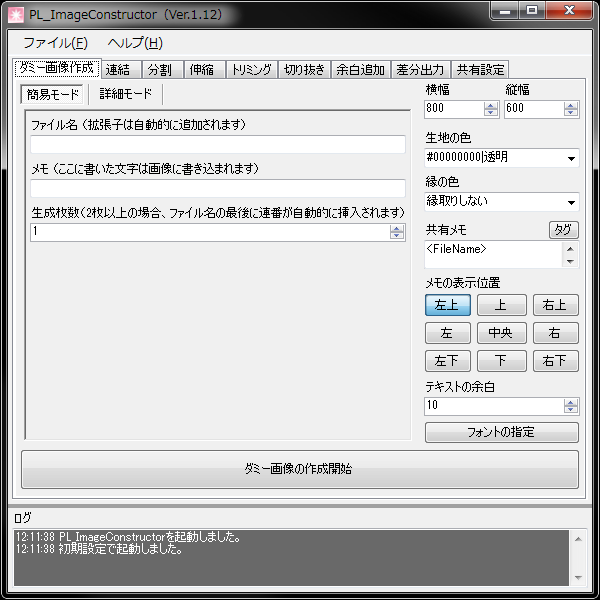

未実装な画像の仮素材として差し込むダミーイメージの作成を行ないます。
サイズを指定して、作成を押せば作ることができますが、リストがあれば一括で作成することもできます。
画像の色、画像内に書き込むテキストなども自由に変更可能です。
- 簡易モード
ダミーファイルを1つだけ作成したり、連番のダミーファイルを大量に生成したい時に使います。
視覚的に分かりやすいモードです。
- 詳細モード
ダミーファイルのファイル名やメモを個別に指定して一括で作成することができます。
既にリソースリスト等がある場合はこちらのほうが便利です。
- テキストボックスモード
ファイルリストを一時的にテキストボックス状態にします。
これにより、一般的なテキストを貼り付ける事ができるので、リストの編集が極めて楽になります。
なお、セパレータ（区切り文字）は、初期設定の場合 半角カンマです。
- 生地の色/縁の色
生地はイメージの背景、縁はイメージの周囲1pxです。
色は、リストから指定するほか、入力する事で任意のものに変更する事もできます。
色指定はARGB表記となります。
Aはアルファ（透明度）、Rはレッド（赤）、Gはグリーン（緑）、Bがブルー（青）です。
従って、無透明の紫を作るには、#FFCC00FFのように指定します。
- 共有メモ
全てのイメージに書き込む情報を指定します。
タグを使うことで、ファイル名など不確定の情報も焼きこむことができます。
- <FileName>
出力したファイル名に置換されます。
- <Width>
出力したイメージの横幅に置換されます。
- <Height>
出力したイメージの縦幅に置換されます。
- <No>
出力したイメージの番号に置換されます。